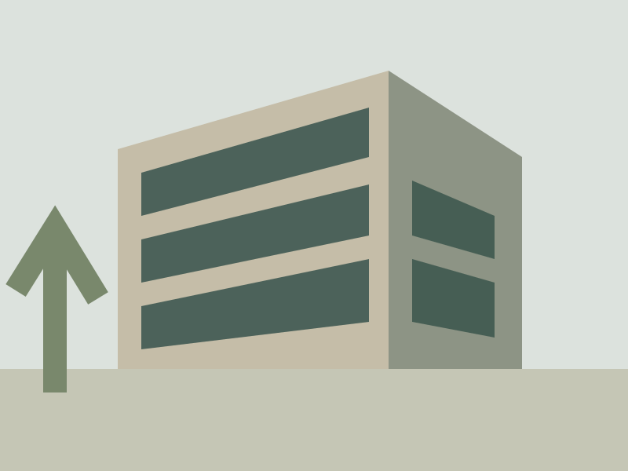

Sena / Fotografer konsepIlustrasi arsitektur, bukan foto karya nyata.

Studi tata letak galeri untuk fotografer. Media adalah ilustrasi SVG asli sehingga bisa diganti dengan foto berlisensi milik pemilik portofolio.